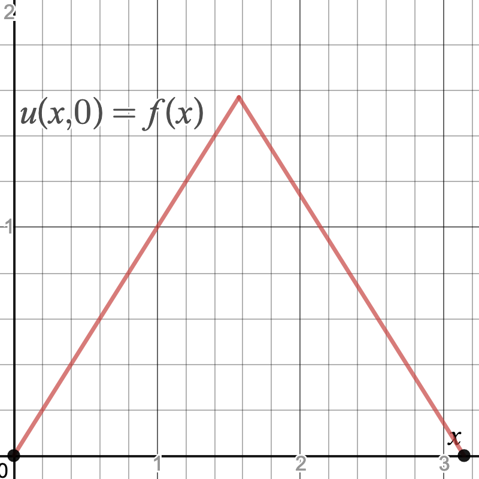
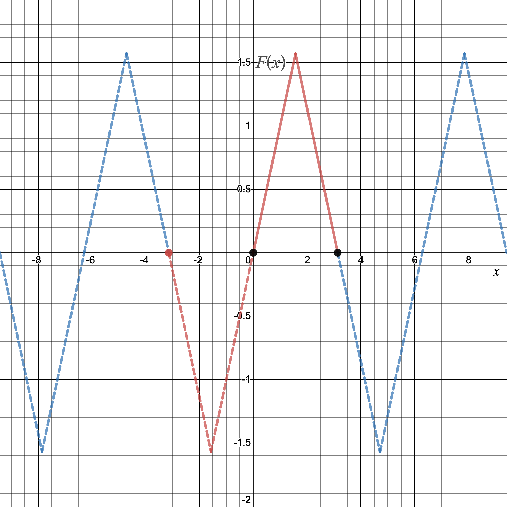
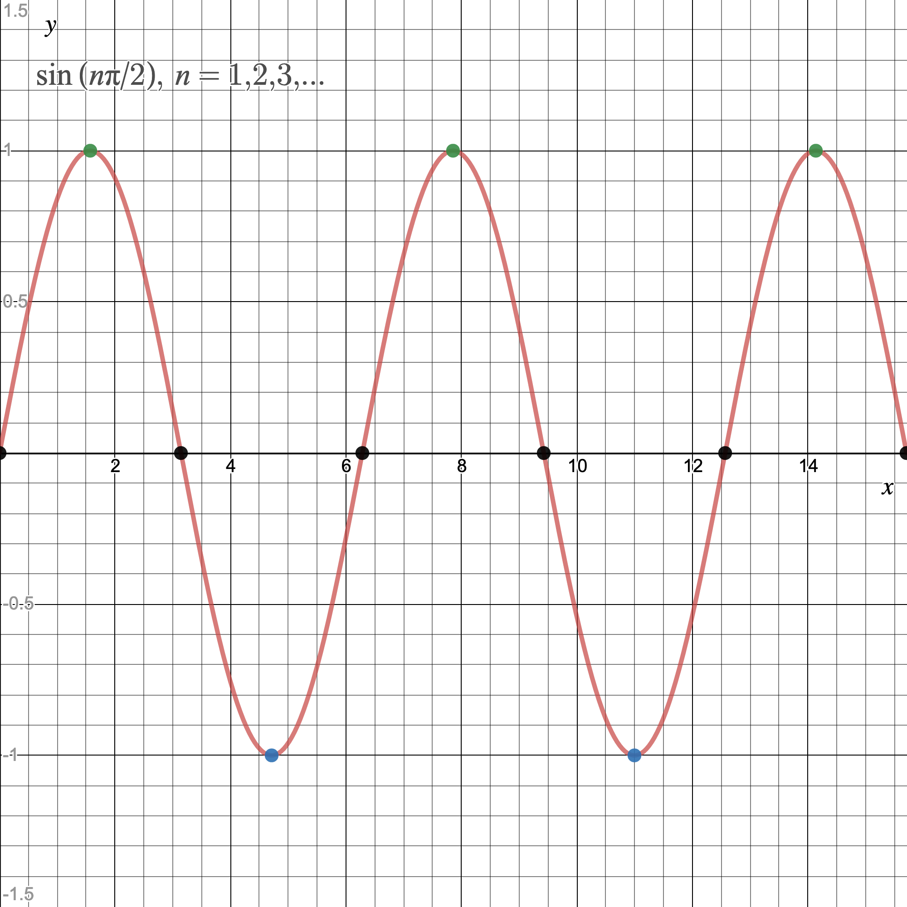
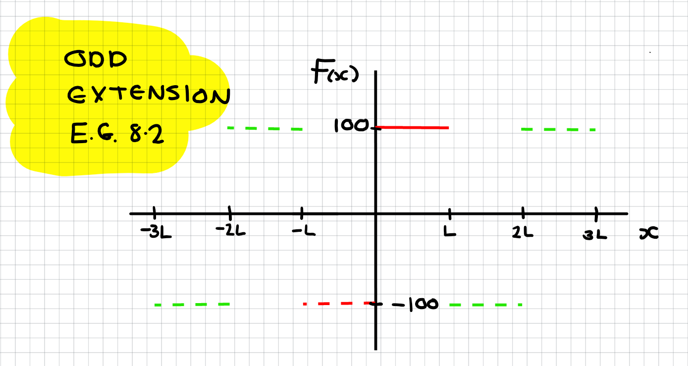

Advanced Calculus L8
- Fourier series solutions of the 1D heat equation
- Examples
Method of Separation of Variables (Ctd)
- Previously, we saw how to solve the 1D heat equation using the method of separation of variables
- In particular, we solved the heat equation with zero BCs and IC given by
\[
u(x,0) = \sin(x)+\frac{1}{2}\sin(2x)
\]
- This enabled us to determine the coefficients of our general solution simply by equating terms:
\[
u(x,t) =\sum D_n\sin(nx)e^{-4n^2t} \\~\\\implies \color{#FF33F9}{\boxed{\color{white}u(x,t) = \sin(x)e^{-4t}+\frac{1}{2}\sin(2x)e^{-16t}}}
\]
Now suppose we want to solve the 1D heat equation for 'non-trivial' initial conditions
How can we do that?
Example 8.1 Solve the IBVP
\[
\frac{\partial u}{\partial t} = 4\frac{\partial^2 u}{\partial x^2},\quad x\in(0, \pi), t>0 \quad u(0,t)=u(\pi,t)=0
\]
when
\[
u(x,0) = f(x) = \begin{cases}x& \text{if } x\in(0,\pi/2)\\\pi-x, &\text{if } x\in [\pi/2,\pi)\end{cases}
\]
We know from Example 7.1 that a general solution to our PDE is
\[
u(x,t) = \sum_{n=1}^\infty D_n \sin(nx)e^{-4n^2t}
\]
We wish to seek the particular solution with a triangle initial profile i.e.
\[
\begin{align*}
u(x,0) &= f(x)\\ &= \begin{cases}x& \text{if } x\in(0,\pi/2)\\\pi-x, &\text{if } x\in [\pi/2,\pi)\end{cases}
\end{align*}
\]

Incorporating the initial condition into the general solution gives
\[
u(x,0) = \sum_{n=1}^\infty D_n\sin(nx) = f(x) = \begin{cases}x& \text{if } x\in(0,\pi/2)\\\pi-x, &\text{if } x\in [\pi/2,\pi)\end{cases}
\]
This looks like a Fourier series, right?
We can work out $D_n$ by computing the FS of
the odd extension of $f(x)$

Putting this altogether we have that the $D_n$ are given by computing the FS of the odd extension $F(x)$.
The $D_n$ are what we would usually refer to as $b_n$.
We want to write
\[
F(x) = \sum_{n=1}^\infty D_n\sin(nx)
\]
Importantly this FS will agree with $f(x)$ on $(0, \pi)$.
The Fourier coefficients are given by
\[
D_n = \frac{2}{\pi}\int_0^\pi f(x)\sin(nx)\mathrm{d}x
\]
To solve for the particular solution with initial triangular heat distribution
\[
\begin{align*}
D_n &=\frac{2}{\pi}\int_0^\pi f(x)\sin(nx)\mathrm{d}x\\
&=\frac{2}{\pi}\left(\int_0^{\pi/2}x\sin(nx)\mathrm{d}x+\int_{\pi/2}^\pi (\pi-x)\sin(nx)\mathrm{d}x\right)\\
&=\frac{2}{\pi}\left(\bigg[-\frac{1}{n}x\cos(nx)\bigg]_0^{\pi/2}+\frac{1}{n}\int_0^{\pi/2}\cos(nx)\mathrm{d}x\right.\\
&+\left.\bigg[-\frac{1}{n}(\pi-x)\cos(nx)\bigg]_{\pi/2}^\pi - \frac{1}{n}\int_{\pi/2}^\pi \cos(nx)\mathrm{d}x\right) = \cdots
\end{align*}
\]
\[
\begin{align*}
\cdots&=\frac{2}{\pi}\left(\frac{1}{n}\bigg[\frac{1}{n}\sin(nx)\bigg]_0^{\pi/2} - \frac{1}{n}\bigg[\frac{1}{n}\sin(nx)\bigg]_{\pi/2}^\pi\right)\\
&= \color{#FF33F9}{\boxed{\color{white}\frac{4}{n^2\pi}\sin(n\pi/2) = D_n}}
\end{align*}
\]
It follows that the FS of $F(x)$ is
\[
\begin{align*}
F(x) &= \sum_{n=1}^\infty \frac{4}{n^2\pi}\sin(n\pi/2)\sin(nx)\\
&= \sum_{n=1}^\infty \frac{4}{(2n-1)^2\pi}(-1)^{n+1}\sin((2n-1)x)
\end{align*}
\]
Since $\sin(n\pi/2) = 0$ for even $n$ and alternates between $\pm 1$ for odd $n$

Since the above FS agrees with $f(x)$ on $(0,\pi)$ we have that
\[
u(x,0) = f(x) = \sum_{n=1}^\infty \frac{4}{(2n-1)^2\pi}(-1)^{n+1}\sin((2n-1)x)
\]
on $(0,\pi)$.
And so the solution to our PDE is
\[
\color{red}{\boxed{\color{white}
u(x,t) = \sum_{n=1}^\infty \frac{4}{(2n-1)^2\pi}(-1)^{n+1}\sin((2n-1)x) e^{-4(2n-1)^2t}
}}
\]
The video below shows the heat distribution for $t=0$ to $t=10$ with $n=1000$ terms
Advanced Calculus L8
- Fourier series solutions of the 1D heat equation
- Examples
Example 8.2 Find the solution to the IBVP
\[
\frac{\partial u}{\partial t} = \frac{\partial^2 u}{\partial x^2}\quad x\in(0,L),~ t>0,\quad u(0,t)=u(L,t)=0
\]
when the initial condition is given by
\[
f(x) = 100, x\in(0,L)
\]
Solution
As usual we assume a separable form $u(x,t) = F(x)G(t)$ from which we derive the ODEs:
\[
\begin{cases}
F''+\omega^2F = 0&F(0)=F(L)=0\\G'+\omega^2G=0
\end{cases}
\]
We can solve the $F$-equation to obtain
\[
F(x) = A\cos(\omega x)+B\sin(\omega x)
\]
and then susbstitute the BCs
\[
F(0) = A = 0 ~~\text{ and }~~ F(L) = B\sin(\omega L) = 0
\]
The second equation implies that
\[
\omega L=n\pi \implies \omega_n = n\pi/L, n=1,2,\ldots
\]
so $\color{red}{\boxed{\color{white} F_n(x) = B_n\sin\left(\frac{n\pi}{L}x\right), n=1,2,\ldots}}$
A family of solutions
To solve the $G$-equation we note that $\omega^2 = n^2\pi^2/L^2$ so that
\[
G' +\frac{n^2\pi^2}{L^2}G = 0
\]
This is a separable ODE which solves to
\[
\color{red}{\boxed{\color{white}
G(t) = C_n e^{-n^2\pi^2 t/L^2}, n=1,2,\ldots
}}
\]
Putting this altogether we have the following family of solutions
\[
\color{yellow}{\boxed{\color{white}
u_n(x,t) = F_n(x)G_n(t) = D_n\sin\left(\frac{n\pi}{L}x\right)e^{-n^2\pi^2 t/L^2}, n=1,\ldots
}}
\]
Now, since the PDE is linear and homogeneous we can sum our solutions to obtain a general solution of the form
\[
\begin{align*}
u(x,t) &= \sum_{n=1}^\infty u_n(x,t)\\
&= \sum_{n=1}^\infty D_n \sin\left(\frac{n\pi}{L}x\right)e^{-n^2\pi^2 t/L^2}
\end{align*}
\]
To find the $D_n$ we need to use the IC, i.e.
\[
u(x,0) = \sum_{n=1}^\infty D_n\sin\left(\frac{n\pi}{L}x\right) = 100
\]
We want to compute the Fourier sine series of $f(x)$
-
The odd extension of the function $f(x)=100$ on $(0,L)$ is

- The FS of $F(x)$ agrees with $f(x)$ on $(0,L)$
- The Fourier coefficient is given by
\[
\begin{align*}
D_n = \frac{2}{L}\int_0^L100\sin(\frac{n\pi}{L}x)\mathrm{d}x &= \frac{2}{L}\bigg[-\frac{100L}{n\pi}\cos\left(\frac{n\pi}{L}x\right)\bigg]_0^L\\
&= \color{yellow}{\boxed{\color{white}\frac{200}{n\pi}\left(1-(-1)^n\right)}}
\end{align*}
\]
It follows that the particular solution is given by
\[
\color{#FF33F9}{\boxed{\color{white}
u(x,t) = \sum_{n=1}^\infty \frac{200}{n\pi}\left(1-(-1)^n\right) \sin\left(\frac{n\pi}{L}x\right)e^{-n^2\pi^2 t/L^2}
}}
\]
The video shows how the heat distribution in this example changes with time
Notice Gibb's phenomenom in the plot to the LHS
Lecture 8 Review
- In this lecture we covered
- Fourier series solutions of the 1D heat equation
- After this lecture you should
- be able to use Fourier series to solve the 1D heat equation for general initial conditions